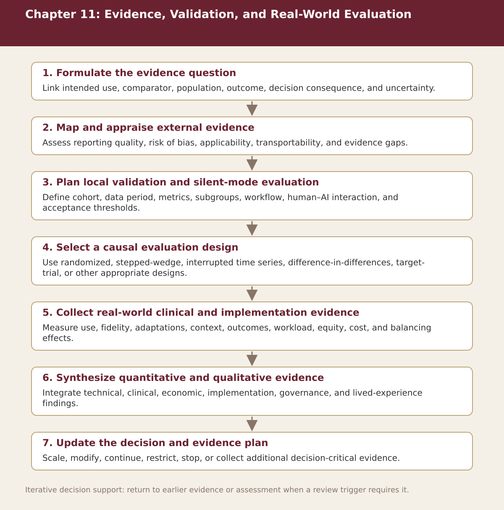

Chapter 11
Evidence, Validation, and Real-World Evaluation
Chapter-level process map linking the chapter’s decision questions to the companion resources and decision gates.

Process steps
| Step | Stage | Purpose | Required Input | Expected Output | Decision Or Gate |
|---|---|---|---|---|---|
| 1 | Formulate the evidence question | Link intended use, comparator, population, outcome, decision consequence, and uncertainty. | Local evidence and the prior approved step | Versioned record for: Formulate the evidence question | Proceed, revise, escalate, restrict, or stop as appropriate |
| 2 | Map and appraise external evidence | Assess reporting quality, risk of bias, applicability, transportability, and evidence gaps. | Local evidence and the prior approved step | Versioned record for: Map and appraise external evidence | Proceed, revise, escalate, restrict, or stop as appropriate |
| 3 | Plan local validation and silent-mode evaluation | Define cohort, data period, metrics, subgroups, workflow, human–AI interaction, and acceptance thresholds. | Local evidence and the prior approved step | Versioned record for: Plan local validation and silent-mode evaluation | Proceed, revise, escalate, restrict, or stop as appropriate |
| 4 | Select a causal evaluation design | Use randomized, stepped-wedge, interrupted time series, difference-in-differences, target-trial, or other appropriate designs. | Local evidence and the prior approved step | Versioned record for: Select a causal evaluation design | Proceed, revise, escalate, restrict, or stop as appropriate |
| 5 | Collect real-world clinical and implementation evidence | Measure use, fidelity, adaptations, context, outcomes, workload, equity, cost, and balancing effects. | Local evidence and the prior approved step | Versioned record for: Collect real-world clinical and implementation evidence | Proceed, revise, escalate, restrict, or stop as appropriate |
| 6 | Synthesize quantitative and qualitative evidence | Integrate technical, clinical, economic, implementation, governance, and lived-experience findings. | Local evidence and the prior approved step | Versioned record for: Synthesize quantitative and qualitative evidence | Proceed, revise, escalate, restrict, or stop as appropriate |
| 7 | Update the decision and evidence plan | Scale, modify, continue, restrict, stop, or collect additional decision-critical evidence. | Local evidence and the prior approved step | Versioned record for: Update the decision and evidence plan | Proceed, revise, escalate, restrict, or stop as appropriate |